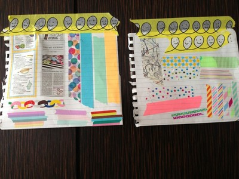
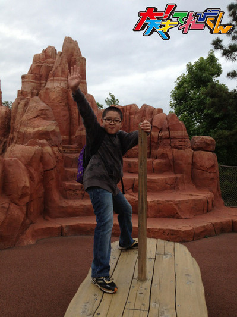
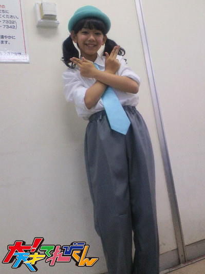
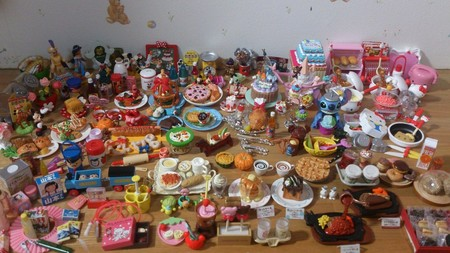
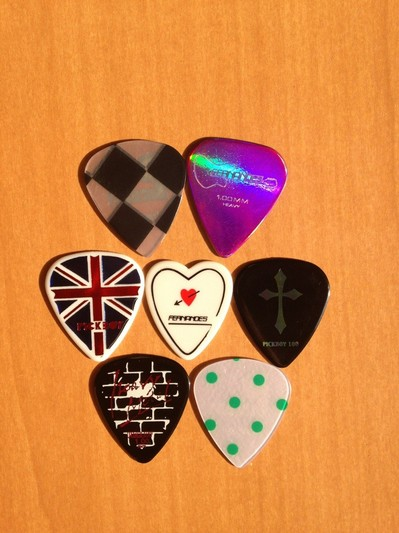

<<2013年6月 | トップページ | 2013年8月>>
2013年7月
【私の朝はこうやって始まります】中里萌
★私の朝はこうやって始まります★
私の朝は・・・
目覚まし時計で、起きると思いきや、
目覚まし時計を２、３個セットしても、起きれません。
なので、お母さんに、拍子木を「カンカン」とたたいてもらって
毎朝起きてます。(//∇//)
あと、もう1つ私の日課は、
冷えているスプーンで目を冷やす事です（笑）。
なぜかというと、私の場合、
寝過ぎで毎朝目が腫れてしまいます。
なので、冷やしています！（笑）
★最近のアイタタタタ★
最近ですね・・・
学校で黒板係になり、授業の終わりに、毎回消しています。
私はきれいに消したつもりだったのですが、
消し残りが沢山あり、クラスの人に笑われ、注意されました。
それが、1回だけなら良いのですが・・・
授業の度に、やらかしてしまいました。
私は、何をやっているのでしょうか！
投稿者:中里萌 | 投稿時間:18時00分 | カテゴリ：We are 大天才テレビジョン | 固定リンク


 " title="ソーシャルブックマークについて">
" title="ソーシャルブックマークについて">
※NHKサイトを離れます。
【私の朝はこうやって始まります】竹原司
★私の朝はこうやって始まります★
僕の朝は、まず7:40位に起きて、トイレに行ってから始まります。
7:40位に起きるのはおそいと思う人もいるだろうけど、
僕の家は、なんと学校の目の前にあるんです！！
だからおそく起きても大丈夫なんです！！
そして起きたあとは、お母さんをおどろかせに行きます。
そーっと近づいてかたをとん、とたたきます。
そしたら「ビックリした！！」とお母さんがおどろいて、
「知らない人が入って来たと思った」といつも言います。
まあ、今のところ10分の1の確率でおどろきます。
そして朝ご飯を食べて、着がえて、歯をみがいて学校に行きます。
朝ご飯はいつもガッツリ食べます。
それが元気のひけつです。
★最近のアイタタタタ★
最近、千葉の海に行って、展望台に登りました。
その展望台は、なんと階段が100段あって登るのがキツかったです。
そして登ったらすごく海がきれいで、すごいなと思いました。
でも風が強くて歩くと、ちょっとだけ体がユラユラして、
そしたらはしごに足をぶつけてしまいました。
痛かったです。
投稿者:竹原司 | 投稿時間:18時00分 | カテゴリ：We are 大天才テレビジョン | 固定リンク
" title="ソーシャルブックマークについて">
※NHKサイトを離れます。
【私の朝はこうやって始まります】ソーズビー航洋
★私の朝はこうやって始まります★
朝起きてすること
僕は、必ず起きてすぐ
朝シャワー
をします(*^o^*)
目が覚めるし、
なんか清潔になった気分で一日すごせます笑
もう1つの理由が、寝癖が酷いのと、
髪の毛の癖（パーマっぽくなってきたんです！）が酷いのもあります笑
でも、シャンプーや湯船に入る等は夜にしてます！
朝にシャワーすると、必要なアブラも取れてしまうみたいで、
はげる原因にもなる て聞きました(´Д` )
なので、朝は水を浴びるだけです！
これは、小学校の頃からやってると思います(o^^o)
ちょぉースッキリするんです！ぜひためしてみてください！
★最近のアイタタタタ★
精神てきに痛いことがありました。
毎日三時間。ときに六時間。
勉強したし、あたまに入りやすい勉強法をしたのに、
期末テスト…
ボロボロでしたぁぁぁ！(＞_＜)
しかも、提出物もちゃんと出したしワークもしっかりやったのに…
それなのに他の友達は逆に、ワークとか提出物とかあんまやってなかったけど、
点数良かったって人もいたんです！
…やっぱ僕勉強向いてないのかな？笑
親も「あんな怖いほど勉強してたのにこれだったら、怒れないよ」
と苦笑いでした。
まぁ、次がんばります笑
投稿者:ソーズビー航洋 | 投稿時間:18時00分 | カテゴリ：We are 大天才テレビジョン | 固定リンク
" title="ソーシャルブックマークについて">
※NHKサイトを離れます。
【私の朝はこうやって始まります】野田真哉
★私の朝はこうやって始まります★
僕の朝はお母さんの大きな声で始まります。
まずそれでも僕はふとんから出られません。
やっと3、4回目で起床です。
そして、またぐーたらゆっくりと洗面台に行って
顔を洗い、かみの毛を直して、歯みがきします。
どんだけ顔を洗っても目が覚めません・・・。
まぁそんなこんなでギリギリ起きてます。
次は朝ごはんです。でも僕は、朝あんまり食べれないんです。
なんか気持ち悪いというか・・・そんな事をしているうちに
もう7：30でヤバイヤバイと思いながらもゆっくりきがえちゃいます。
ギリギリできがえ終わっていってきまーすって感じです！
★最近のアイタタタタ★
僕は運動が好きです。
でもたまにムリしちゃうことってありませんか？
この前、学校でハードルがありました。
まぁ色々用事があって練習行けなかった・・・行きたかった・・・
で、やっと体育に参加できたんです。
うれしくて、喜んでました！
体育が始まる前までは・・・
始まって先生が最初に言った一言
「今日は、テストがんばれよ〜！」
・・・ガーン
やった事もないのに走りました。
僕は走りました。
そして、こけました。
もぉー！チョーいたかった！
こけた時の傷跡のこっちゃったし。
ハードルなんて・・・ハードルなんて〜泣
投稿者:野田真哉 | 投稿時間:18時00分 | カテゴリ：We are 大天才テレビジョン | 固定リンク
" title="ソーシャルブックマークについて">
※NHKサイトを離れます。
【私の朝はこうやって始まります】長谷川ニイナ
★私の朝はこうやって始まります★
最近1日5回は「暑い」と言っている気がするニイナです！！
でも、夏になると、朝が楽になりますよね〜！
私の朝は7:00頃始まります！
そして洗面所に行って洗顔をし、着替えて、
朝食を食べるというわけなんですが・・・。
最近必ずと言っていいほど、朝は「豆腐」を食べています！！
食べ方はどんな時も「冷奴」！！
豆腐が大好きなので、朝冷たい豆腐を食べると
「シャキ！！」っとするんですよね〜☆
あとは、歯磨きをして、髪を結んで、
再度時間割を確認したら学校に行くというような感じですが・・・。
なかなか時間が経つのが早くて。
いつの間にか、家を出ないといけない時間になるんですよね〜。
よし、明日は6:30に起きようかな！？
★最近のアイタタタタ★
この間ですね〜、勉強中に定規がなくなってしまったのに気づいてしまいまして。
机の辺りはもちろん、学校のバッグの中や、引き出しの中まで色々と探してみたんです。
でも定規がどこにもなくて・・・。
そしたら、次の日の学校で！
ノートの一番後ろのページにはさまっていました！
なんで、今まで気づかなかったんだろう。(´Д｀)
こんなドジな自分からは卒業したいです！！
投稿者:長谷川ニイナ | 投稿時間:18時00分 | カテゴリ：We are 大天才テレビジョン | 固定リンク
" title="ソーシャルブックマークについて">
※NHKサイトを離れます。
【私の朝はこうやって始まります】中尾美晴
★私の朝はこうやって始まります★
AM6:00 起きる ☆起きてすぐ朝ご飯☆
6:40 支度を始める
歯みがきをしながら漢字表を見る
洗顔とトイレしながら歴史表を見るよ
髪を結ぶよ
7:00 日焼け止め←これが一番時間かかる。その後きがえ。
7:20 ピアノ
7:30 勉強
7:50 学校へ
☆日焼け止めをつけるのは、幼稚園の時から毎日必ず！ 美白のため〜☆
★最近のアイタタタタ★
東京に行った日、雨だった！
重いスニーカーは家に宅急便で送り、長ぐつにはきかえ！
☆準備ばっちり☆
次の日、学校に行く時、「あれ！？あれ？？美晴のくつは？？？」
ギャ〜〜〜〜〜〜〜〜〜〜！！！
宅急便で送ってるからない！！
カンカン照りの日に美晴は長ぐつで登校。
となりのクラスのお友達、美晴の足元をじーーーーーっと無言で見てた！！
あたたたた<(・ω・)>
投稿者:中尾美晴 | 投稿時間:18時00分 | カテゴリ：We are 大天才テレビジョン | 固定リンク
" title="ソーシャルブックマークについて">
※NHKサイトを離れます。
【私の朝はこうやって始まります】黒澤美澪奈
★私の朝はこうやって始まります★
おはようございます！みれなです(^o^)／
私が、毎朝必ずやることは…
寝ぞうの悪い、我が家のぬいぐるみ達の回収から始まります！
夜寝るときには、ちゃんと私の横にいるのですが、
朝になって目を覚ますと、
あっちへ こっちへ 飛んでいってて、
スゴく寝ぞうが悪いんですよ〜（´。｀)「
ダメですね〜笑
いつになったら、ちゃんと私の横で寝てくれるのでしょう？
って、ごめんね
実は、私の寝ぞうが悪いせいなんですけどね〜笑
★最近のアイタタタタ★
そうですね…
この前の、7月最後の木曜LIVEの時、
「むちゃぶりヤバイいよ」というコーナーで
初めて、私への“むちゃぶり”がきたのです！
お題が「自分を褒め称えてください！」
ビックリしましたよ〜！！！！
しかも、カーテンの裏に入った瞬間、舞い上がっちゃって
自分で最後に
『美澪奈 さいこうーー！！』
なんて言っちゃいましたよね？
もう、周りの視線が痛かったですね〜笑
正直、あの時の映像は、自分で見れないです｡｡｡
でも、言ったことがない言葉を言うと、
なんか新鮮ですねっ 笑
投稿者:黒澤美澪奈 | 投稿時間:18時00分 | カテゴリ：We are 大天才テレビジョン | 固定リンク
" title="ソーシャルブックマークについて">
※NHKサイトを離れます。
【私の朝はこうやって始まります】相澤侑我
★私の朝はこうやって始まります★
朝の爆睡顔(￣+ー￣)】
僕は寝起きが良いほうなんです！
お母さんが、僕が起きた瞬間の寝ぼけた顔を撮ろうとしたみたいだけど、
もうパッと目が覚めちゃってるから、笑っちゃって笑っちゃって………
寝ぼけ顔を撮るのは失敗……………
で、今度は起こさないように、まだ寝てるところをパチリ(^_−)
全然気づかなかった…
学校がある日は、朝6:35にテレビがついて起きます。
設定チャンネルはもちろんEテレ！
大好きな番組が観たいからちゃんと起きちゃう(＾Ｏ＾)
あと我が家では、学校がある日の朝食はパンじゃなくて絶対ご飯です(^_^)v
なんでかなぁ………
お母さんは、「朝はご飯じゃないとダメ」って言うけど、僕はパンも好きなんだけどな(^_^;)
あ、あと食べ終わったら歯磨き！
舌も磨きます(^o^)/
「舌磨き」っていうヤツでカガッと!!!!!!!!!!
たまに「おぇっ」ってなるけど(^_^;)笑
ベロがキレイになってすっきり気持ちいいです(^o^)
7:40ぐらいに家を出て、うちの前で友達と待ち合わせ！
みんなで一緒に学校へ行きます*＼(^o^)／*

★最近のアイタタタタ★
僕が心から痛かった事を教えます……
学校で2泊3日の行事の3日目に、どうしても帰らなくてはいけなくて、
2日目の夜までしかいられなかった事です……
僕は班長だったのですが、
帰ってから班のみんながお土産をくれたのが、チョ〜嬉しかったです！
来年の行事は、絶対最後まで参加したいと思います ！！
思い出すのもつらい事なので、終わります 泣
投稿者:相澤侑我 | 投稿時間:18時00分 | カテゴリ：We are 大天才テレビジョン | 固定リンク
" title="ソーシャルブックマークについて">
※NHKサイトを離れます。
【私の朝はこうやって始まります】金子隼也
★私の朝はこうやって始まります★
僕は毎朝６時に目覚まし時計で起きます。
寝癖がひどい時もあったり、最近は汗でビッショリなので起きたらすぐにシャワーを浴びます。
目も覚めるしスッキリします！
朝ごはんは、パンの時もあったりご飯の時もあったりですが、必ずしっかり食べるようにしてます。
最近は「サラダそうめん」もオススメです。
朝の様子、かなり普通ですね(笑)
みんなも同じだと思うけど通学用のバックがかなり重くて大変です。
この間、計ってみたら…なんと7.7キロありました。
これに水筒２つにお弁当、部活のシューズを持って登校スタイル完成です。
では、行ってきまーす！
★最近のアイタタタタ★
最近熱中症になっちゃいました。
ちゃんと水分補給はしてたんですけどね。
もっと注意しなきゃいけないって事ですよね。
高熱に頭痛に吐き気に本当に大変でした。
僕が熱中症になったのは梅雨明けの数日前でした。
梅雨明けしてから猛暑日が続いています。
今年の夏はすごく暑くなっているので皆さんも気をつけて下さいね。
僕はすっかり元気になりました。
朝ごはんしっかり食べて今日も１日頑張ります！
隼也でした(^_^ゞ
投稿者:金子隼也 | 投稿時間:18時00分 | カテゴリ：We are 大天才テレビジョン | 固定リンク
" title="ソーシャルブックマークについて">
※NHKサイトを離れます。
【私って「オタク」かも？】中里萌
★私ってオタクかも？★
私の熱中していることは、インテリアを見ることです。
昔から、家具屋さんに行ったり、雑誌を見て、
いろいろな種類の家具やインテリアを探すのが
好きでした。
私は特にテーブルやイスなどで、
木の素材で、絵の具でぬったようなデザインが好きです！！
自然な感じで、いやされるデザインは、最高です。
語るのにも、熱中してしまった！Σ(´□｀；) （笑）
というわけで、最近も、インテリア雑誌よく見てま〜す(＾▽＾)/ ♪
★最近の身近なできごと★
なんとですねぇ〜〜〜♪♪
最近、夏にはかかせない『プール』が始まりました！！
でも、運が悪く、プール1日目は気温と水温が低く
とても寒かったです。（涙）
つめたい水が体にかかる度、叫んで先生に怒られまくりの1時間でした。
次は、気持ち良く入りたい(＾▽＾)
投稿者:中里萌 | 投稿時間:18時00分 | カテゴリ：We are 大天才テレビジョン | 固定リンク
" title="ソーシャルブックマークについて">
※NHKサイトを離れます。
【私って「オタク」かも？】岡田結実
★私ってオタクかも？★
私はSEKAINOOWARIオタクです♪♪
前の記事でも載っけたんですけど、
本当に、セカオワが大好きで
もぉ！！
誰にも負けないです笑。
毎日、セカオワの歌を絶対に、聞いてます！！
聞いたり、踊ったり、歌ったり、動画を見たりしています(*≧艸≦)
いつも、歌を聞く時に
いつか会えますように！
とお願いしてます///
今日もセカオワの歌を聞く予定です♪♪
★最近の身近なできごと★
中学生になったら
スクールバックを持つじゃないですか！
スクバ(スクールバック)の中が、色々な物でぐちゃぐちゃになっていて…
教科書やプリントやお弁当などなどで、
ぐちゃぐちゃでになっていて、
ある日学校ついてスクバを開けたら筆箱がなくなってて！！
スクバの中も探し、
学校のロッカーの中も探し、
家も探しました！！
そしたらΣ(￣Д￣ )
なんと！！！！
やっぱり筆箱なかったんです…
(なかったんかーいっ！！笑)
未だに筆箱は、見つからないので、
渋々、新しい筆箱を買いました…。
整理整頓は大切だなって思いましたΣ(・ω・」)」
投稿者:岡田結実 | 投稿時間:18時00分 | カテゴリ：We are 大天才テレビジョン | 固定リンク
" title="ソーシャルブックマークについて">
※NHKサイトを離れます。
【私って「オタク」かも？】相澤侑我
★私ってオタクかも？★
侑我で〜す。
幼稚園の頃から、ピタゴラ装置にハマっています。
今はあまり観ませんが………
テレビの『ピタゴラスイッチ』が大好きでした。
装置の本をおじいちゃんが全巻買ってくれたのがきっかけで、
毎日本を読んで、装置のNO.と特徴を全部覚えました。
その中でも僕が気にいっている装置は、
NO.89の『計算通り』というピタゴラ装置です。
何もかもが計算通りに動いていく装置です。
シンプルなのにアッと驚くピタゴラ装置、みんなも好きですよね〜（≧∇≦）
ぜひ作ってみてください。
★最近の身近なできごと★
最近、友達と久しぶりにブランコに乗りました〜*\(^o^)/*
「1、2の3」の掛け声で飛び降りたり、立ち漕ぎをしたり、
すっごい楽しくて、一瞬だけ3歳児になった気分でした(^｡^)
いっぱい蚊に刺されましたが………
話変わって！
もうすぐ夏休みですね☆
みんなはどんな夏休みを過ごしますか？
じゃあね〜(^_−)−☆
投稿者:相澤侑我 | 投稿時間:18時00分 | カテゴリ：We are 大天才テレビジョン | 固定リンク
" title="ソーシャルブックマークについて">
※NHKサイトを離れます。
【私って「オタク」かも？】山田陶子
★私ってオタクかも？★
１歳から、ずっと好きな「紫」
囲まれてると、落ち着くんですぅ〜。
すぅ〜
すぅ〜
すぅ〜
２時間経過・・・zzz
ママがこのあとは、暗くなったし写真撮らなかったそうです。
昼寝最高！！！
あれ？オタクの話・・・(-_-;)
★最近の身近なできごと★
ある日の楽屋での話〜＼(-o-)／
相沢君かな？が、ニイナに『マカロニ―ナ』ってあだ名をつけたのです。
そしたら、ニイナ！
「マーカロニ♪マーカロニ♪マーカロニ♪♪」
何故か歌いだしたのです・・・(・o・)
ハイテンションなニイナ！
隣にいた隼也に！
「マーカロニ♪マーカロニ♪マーカロニ♪♪」
マカロニ攻撃！！
対する隼也！
それを横目に、音楽に夢中、動かない！
ニイナめげずに、マカロニ攻撃連続技！！！
ニイナvs隼也
さて結果は・・・・・・・
ニイナ勝利！
隼也「も〜(~_~;)www」
二人のやりとりに、ほっこりした私、陶子でしたwww
そして、勝利のポーズv(^・^)v

投稿者:山田陶子 | 投稿時間:18時00分 | カテゴリ：We are 大天才テレビジョン | 固定リンク
" title="ソーシャルブックマークについて">
※NHKサイトを離れます。
【私って「オタク」かも？】延命杏咲実
★最近の身近なできごと★
こんにちは。雨女の延命です！
私は・・・「お天気オタク」です！
お天気が大好きすぎて、しょう来のゆめもお天気お姉さんです。
なんと、自由研究もお天気についての本を書きました！
でも、いろいろなことがあって、泣きながら書きました・・・。
図をがんばって書いたのに、ページをとばして書いてしまったり、
さかさまに書いてしまったりして、本当にいろいろありました。
だから、この本は私のお気に入りです。
みんなにも見てもらいたいな☆☆☆
★最近の身近なできごと★
なんと、運動会の８０m走で、１位をとれました！
あのスクープ野ろうのロケで、ため末さんに教えてもらってなかったら
ビリになっていたのかもしれません・・・。
ため末さん、ありがとうございました！
投稿者:延命杏咲実 | 投稿時間:18時00分 | カテゴリ：We are 大天才テレビジョン | 固定リンク
" title="ソーシャルブックマークについて">
※NHKサイトを離れます。
最強アバターを決める「アバタイセン」〜第4戦〜
地上最強のアバターを決める超大型企画「アバタイセン」。今回は第4戦。
大天才テレビジョン内部にあるコンピューターが自動対戦した結果、
全世界に存在する全21398体のアバターの頂点に立ったのは…

宮崎県 カチコチさん
おめでとう！
ベスト８の対戦結果はこちらです（左クリックで拡大します）。
アバターの強さは、『パーツ』や『色』の組み合わせで変わります！
番組HPにあるトレーニングセンターで自分のアバターと、てれび戦士や出川特命Pの
アバターと対決させて、最強アバターになる組み合わせを見つけてほしい！
君も最強のアバターを作って対戦の時を待て！
アバターの制作はこちらから！
投稿者:大天才テレビジョン社員１号 | 投稿時間:13時15分 | カテゴリ：大！木曜LIVE | 固定リンク
" title="ソーシャルブックマークについて">
※NHKサイトを離れます。
【私って「オタク」かも？】島田太一
★私ってオタクかも？★
ラーメンに熱中しています。
ラーメン屋さんに行ってラーメン出てきて、写真を撮るのが
自分の中でルールなんです。
どこでも麺の固さの調節は固めで共通で頼みます。
ですが、ラーメンは熱いのでメガネがくもってしまいます。
基本的にどのスープも好きなんですが、
一番は豚骨スープが好きですね。
そこで僕は焼豚は最後に食べるタイプです。
はい、ラーメンが食べたくなってきた島田太一でしたー。
★最近の身近なできごと★
最近、ノダシンと遊ぶ機会がとても多いです。
キャッチボールしたり、クレープを食べたり、ご飯を食べたり、
とにかく、たくさん遊びました、
合う話題がたくさんあるんです。
そして、すごく笑っています。
理科のテストの点数も同じでした（笑）
でも、遊んでる時にすごく思うんですが、ノダシンはすごい歌います。
そして、さりげなく踊ります。
僕はいつも恥ずかしくないのかなぁと思います。
でも気持ち良さそうに歌っていったので、話しかけませんでした。(´ω｀#)
投稿者:島田太一 | 投稿時間:18時00分 | カテゴリ：We are 大天才テレビジョン | 固定リンク
" title="ソーシャルブックマークについて">
※NHKサイトを離れます。
【私って「オタク」かも？】ソーズビー航洋
★最近の身近なできごと★
はろろーん♪
Zv--です！
ぼくはマスキングテープおたくです！

きっかけは、ゆいが持っていて、かわいいーーーって思ってお店に買いにいったら、
おしゃれなのやかわいいのやかっこいいのやらでいーーっぱいるんです！
んでハマりすぎて、30種類もってるんです！
このテープは壁にも紙にも貼れて、テープを剥がしたあとに、壁とか紙はハゲないんです！
色の感じも、
蛍光、キラキラ、ふつう柄と様々！
前みんなで楽屋にマスキングテープをもってこよーみたいになって、
僕は30×15くらいのお弁当箱にいれて持ってきたら、やっぱり1番もってるんですよ笑
でも延命師匠やみはるっちやみれなは、かしてー！といってノートやスマホケースや筆箱にはってました笑
※ノートは淵につけてるんです！
太一も持ってるんですよ！
だから男女とわず使えるし、安いし、便利だからぜひ買ってみてください！
★最近の身近なできごと★
まえニイナとお茶してたら、アニメーションダンスでお世話になった
「コウテイセンニン」さんとバッタリ会ったんです！お互いビックリ笑
私服もとってもクールで、なんかテレビのまんまって感じで、ダンサーオーラが出てましたね笑
なんかぱっと見光ってました笑
またいつ会えるんだろー笑
それでは！♪
投稿者:ソーズビー航洋 | 投稿時間:18時00分 | カテゴリ：We are 大天才テレビジョン | 固定リンク
" title="ソーシャルブックマークについて">
※NHKサイトを離れます。
【私って「オタク」かも？】長谷川ニイナ
★私ってオタクかも？★
私はですね・・・。
「カラータイツオタク」でしょうか（笑）
可愛いなぁと思って買ってもらっていたら、
いつのまにかどんどん増えてしまいました。
たくさんありますよ〜(＾▽＾)/
青のタイツと緑のタイツとオレンジのタイツと黄色のタイツ、ピンクのタイツ・・・。
その日の気分に合わせて使ってます！！
そういえば、もう夏ですね！
夏には、カラータイツ、どうしよう。
暑くてはけないので、しばらくの間、お別れのようです〜(T△T)
★最近の身近なできごと★
この間（てれび戦士と一緒にいる時）のことなんですけど・・・。
どうしてもゆるまない固〜いネジがあったんです！
そのネジが本当に固くて、一番力のありそうな隼也とか太一とかも
頑張ってやっていたんですけど。
まぁ無理だろうと思って回していたら、なんとできちゃったんですよ！！私に！！！
みんなも驚いていたんですけど、多分一番自分が驚いていました！！
握力はそこまでないんですけど、どうしちゃったんですかね〜。
う〜ん。何なんだ？？
投稿者:長谷川ニイナ | 投稿時間:18時00分 | カテゴリ：We are 大天才テレビジョン | 固定リンク
" title="ソーシャルブックマークについて">
※NHKサイトを離れます。
【私って「オタク」かも？】竹原司
★私ってオタクかも？★
こんにちは！！司です！
「オタク」って思う事ですよね！
ありますよ！
それは・・・
「映画」です！
たぶん映画は何百本って見てます！
映画はいろいろな事を教えてくれるし、映画の中に入って
冒険できるので大好きです。（イメージ）
前回の大天ブログで、トム・クルーズさんが好き！と言ったように
（前回のブログ見てない人ゴメンなさい・・・。その記事はコチラ。）
ハリウッドスターの人はすごく尊敬しています！
映画を見ていると自然と手が動いて、「そこだ！バンバン！」と
じゅうのマネをしたりしてしまいます。
だからちょっとオタクみたいだな・・・と思うこともあるけど
楽しいからOKです！！
★最近の身近なできごと★
最近、友達3人と遊園地へ行きました。
めっちゃくちゃ人がいて、5時間まちの乗り物とかもあったけど
効率良く、いろいろな乗り物に乗れました。
友達と遊園地に行くきかいなんて全然ないから
すごく楽しかったです！！
（写真は「トム・ソーヤ島」で遊んだ時の物です）

投稿者:竹原司 | 投稿時間:18時00分 | カテゴリ：We are 大天才テレビジョン | 固定リンク
" title="ソーシャルブックマークについて">
※NHKサイトを離れます。
【私って「オタク」かも？】金子隼也
★私ってオタクかも？★
こんにちは！隼也です(^-^)/
僕は、お父さんの影響もあって、昭和の仮面ライダーが大好きです！
フィギュア、本、記念切手、CDなど沢山集めていました。
仮面ライダーを演じていた藤岡弘、さんはスタントマンなしで演じていました。
すごいアクションシーンを演じていてすごいなーって
見ている時は、いつも思っています。
僕もアクションシーンにトライしてみたいなー。
ドラマ 大天才テレビジョンに出てくる「あの人たち」懐かしい感じがしました。
あの隊員、僕もなってみたいな。
★最近の身近なできごと★
この前、太一と真哉と一緒に公園で野球をしました。
太一と真哉は打つのが上手かったのですが、
僕は一回しか打てなくて皆で爆笑してました。
今度は、てれび戦士皆でスポーツ大会をやりたいなー。
投稿者:金子隼也 | 投稿時間:18時00分 | カテゴリ：We are 大天才テレビジョン | 固定リンク
" title="ソーシャルブックマークについて">
※NHKサイトを離れます。
【私って「オタク」かも？】黒澤美澪奈
★私ってオタクかも？★
こんにちは(^o^)v みれなで〜す!!
「オタク」と言えるかどうかわからないけど…
最近、面白い乗り物を見ると、わくわくして乗ってみたくなります！
“乗りすけさん”のせいかな…？
いままで、乗りすけさんでは、海、山、川、湖、畑、工場など、
いろんなところで、いろんな乗り物に乗りました！
実は、昨年乗った「フライボード」は、日本では、小学生で初めて乗ったのが、
“みれな”なんだそうです！
自慢できちゃう話ですよね！笑
また乗りたいな〜♪
乗ってて楽しかったのは、「スノーモービル」です。
ＴＶで見ると、すごくゆっくり走っているように見えるけど、
実際乗ってみると、みれなには、結構早く走っているように感じました！
あれでも、全速力で走っているんですよ〜笑
あと、大放研では、「クラタス」に乗りました〜！
ロボットに乗ったのは初めてでした！
コックピットの中は、まるでアニメのロボットを操るヒーローになったみたいで、とても楽しかったです♪
実は、このロボットお値段が、すごくお高いらしいんです。
あとで知ってビックリしました〜
壊さなくてよかったε(´ο｀)ヽ
そして、いつか乗ってみたい乗り物は
「しんかい6500」です！
海底6500ｍまで、もぐれるんですよ!?
富士山を逆さまにしたよりも、深いところまでもぐれるんです!!
めちゃめちゃすごくないですか？
一度でいいから、深海生物をこの目で見てみたいです
もし乗ることができたら、いいな〜(´∀｀)
皆さんも、もし面白い乗り物を知っていたら、是非、教えてくださ〜い
m(__)m
★最近の身近なできごと★
この前放送した、アニメーションダンス対決！
いかがでしたか？
みれなは、Ａチームでクマ先生のご指導のもと、４人で力を合わせて頑張ったけど、
Ｂチームの迫力に負けてしまいました〜泣
正直、悔しかったです！
でも、みんなで力を合わせて、ひとつの物を作り上げる時間がとても楽しかったです！
ダンスも大好きなので、是非、リベンジしたいです！！！！！

投稿者:黒澤美澪奈 | 投稿時間:18時00分 | カテゴリ：We are 大天才テレビジョン | 固定リンク
" title="ソーシャルブックマークについて">
※NHKサイトを離れます。
【私って「オタク」かも？】中尾美晴
★私ってオタクかも？★
美晴が熱中している事はミニチュア家具を集めて飾ることだよ！
ミニチュア家具はシリーズごとに家具が入ってる。
でもどの種類が入ってるかは開けてからのお楽しみ！
ここが一番楽しい所！（＾＾）！
気に入ったのがあたったかな！？
このドキドキ感がたまらないよ〜っ（＾０＾）
こうして毎月おこづかいで少しずつ集めて、３年でたっくさんそろえたよ。
これまでのミニチュア家具を最後綺麗に並べたら・・・
ジャーン(*´∇｀*)

可愛いでしょ(´艸｀)
キャラクター物や日本風の物、パーティ風の物などいろいろあるねん(☆o☆)
一番のお気に入りは縄とびや文ぼうぐの学校セット。
とってもリアルやで！
ちなみにこの写真のように、ミニチュア家具を並べるには
軽く2時間はかかるよ。
時間はかかるけど、このミニチュア家具大〜好きやよ☆
みんなも是非、是非、試してみてね（＾０＾）
★最近の身近なできごと★
てれび戦士になって3ヶ月。
毎日楽しいなって改めて
最近思う☆
投稿者:中尾美晴 | 投稿時間:18時00分 | カテゴリ：We are 大天才テレビジョン | 固定リンク
" title="ソーシャルブックマークについて">
※NHKサイトを離れます。
【私って「オタク」かも？】野田真哉
★私ってオタクかも？★
僕は最近サッカーオタクです（笑）
サッカーの事ばっかり考えています。
そして口ぐせも「サッカーやりたい・・・」とか・・・
お母さんは「それいいすぎ」って言うんです。
でもそれくらいサッカー大好き☆
そんな僕の宝物はこの名古屋グランパスのサインボールです。
これからもサッカーがんばりまっす！！
★最近の身近なできごと★
最近、学校で期末テストがありました。
まだ結果はでてないけれど中間よりもてごたえがあります！
やっぱりテストなので勉強はつらかったです。
特に終わり3日間は1日7〜8時間くらいやってました。
もう、勉強という言葉を聞くと頭痛が・・・（笑）
中学は予想以上にきついです。
投稿者:野田真哉 | 投稿時間:18時00分 | カテゴリ：We are 大天才テレビジョン | 固定リンク
" title="ソーシャルブックマークについて">
※NHKサイトを離れます。
【押忍！シャイ番長友情の旅】 第９回 金子の日記
「押忍！シャイ番長友情の旅」９回目の放送、ご覧いただけましたか？
火がおきるまでに2時間かかって、日帰りキャンプ、
どうなることかと思われましたが…
シャイ番長、頑張りました！
屋外でつくるバウムクーヘンのレシピは、いろいろなサイトで紹介されています。
竹を芯にしてつくる場合は、竹が破裂しないように、きり・のこぎりなどで竹の節に穴をあけてくださいね。
山あり谷ありの展開を、シャイ番長の日記でもお楽しみください。
左クリックをすると、原寸大になります。
投稿者:大天才テレビジョン社員２号 | 投稿時間:18時54分 | カテゴリ：お知らせ！ | 固定リンク
" title="ソーシャルブックマークについて">
※NHKサイトを離れます。
【私のアイドル】岡田結実
★私のアイドル★
SEKAI NO OWARI さんが大好きです
好きになったのは2012年くらいからで、すず（鎮西寿々歌）などなど
みんなの影響で好きになりました☆
なぜ好きなのか？
それはSEKAOWAの歌の雰囲気が大好きで
明るい歌や暗い感じのクールな歌、
元気のもらえる歌など色々あって大好きです！
そしてふかせさん（ボーカル）。
ふかせさんの声が大好きです。
聞いてるだけで幸せになったりします☆
いつかは会ってみたいですし、一緒に共演もしてみたいです(*^^*)
そのためには、今もこれからもがんばりますっ！！
大好きなSEKAOWAさんにいつかきっと会いたいです☆///
★最近の身近なできごと★
今年中学校で軽音楽部に入ったので
写真をギターのピックにしました☆
このピック、友達のピック借りて写真撮ったんですけどね！
ちなみにゆいの担当の楽器はベースです♪♪
まだ買ってないのですが…
早く買って、文化祭に向けて本格的に頑張っていきます(*´∀｀*)

投稿者:岡田結実 | 投稿時間:18時00分 | カテゴリ：We are 大天才テレビジョン | 固定リンク
" title="ソーシャルブックマークについて">
※NHKサイトを離れます。
ページの一番上へ▲